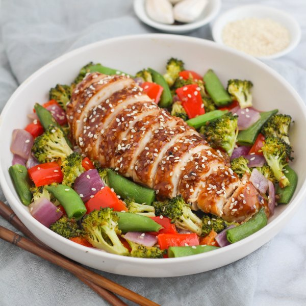

Sheet Pan Sticky Sesame Chicken with Roasted Broccoli & Peppers

Total Time
45 min
Nutrition (per serving)
540 kcalCalories
46.6 gProtein
35.1 gCarbs
24.7 gFat
Full nutrition table
| Calories | 540 kcal |
| Total fat | 24.7 g |
| Saturated fat | 5.5 g |
| Trans fat | 0 g |
| Cholesterol | 124.2 mg |
| Sodium | 118.8 mg |
| Carbohydrates | 35.1 g |
| Fiber | 7 g |
| Sugars | 21.3 g |
| Protein | 46.6 g |
| Potassium | 1232.4 mg |
| Calcium | 100.5 mg |
| Iron | 4 mg |
| Vitamin A | 584.6 IU |
| Vitamin C | 188.8 mg |
| Vitamin D | 1.7 IU |
Cookware
Ingredients
- 2 crownsbroccoli
- 1 ½ lbchicken breasts, boneless skinless
- 2 clovesgarlic
- 2 (1 inch) piecesginger root
- 2red bell peppers
- 1 mediumred onion
- 1 (8 oz) pkgsugar snap peas
- black pepper
- cornstarch
- extra virgin olive oil
- honey
- salt
- sesame seeds
- tamari soy sauce
- toasted sesame oil
- virgin coconut oil
Steps
- Preheat oven to 400°F.
- Wash and dry the fresh produce.2 red bell peppers
2 crowns broccoli
1 (8 oz) pkg sugar snap peas
2 (1 inch) pieces ginger root - Pat the chicken breasts dry with paper towels, rub with olive oil, season generously with salt and pepper on both sides and place in the middle of a parchment paper lined baking sheet.1 ½ lb chicken breasts, boneless skinless
2 tbsp extra virgin olive oil
½ tsp salt
½ tsp black pepper - Peel and medium dice the onion. Cut the sugar snap peas crosswise (at an angle) into 1-inch pieces and add to a mixing bowl.1 medium red onion
- Cut the bell peppers into quarters lengthwise; remove and discard the seeds and white membranes. Medium dice, add to the bowl with the onion.
- Separate broccoli into bite-sized florets and cut stems into bite-sized pieces and add to bowl with other vegetables.
- Drizzle the vegetables with oil and season with salt and pepper; toss to coat, then arrange in a single layer on baking sheet around the chicken breasts. Bake in the oven for 20 minutes.2 tsp extra virgin olive oil
1 tsp salt
½ tsp black pepper - Heat a small saucepan over medium heat. Once the pan is hot, add coconut oil and swirl to coat the bottom.2 tsp virgin coconut oil
- Peel and mince the garlic. Peel and mince or grate the ginger. Add to the saucepan, cook stirring until fragrant, about 30 seconds.2 cloves garlic
- Add soy sauce, honey, sesame oil, sesame seeds and water to the saucepan. Bring sauce to a boil, then reduce heat to low, stirring frequently.¼ cup tamari soy sauce
3 tbsp honey
2 tsp toasted sesame oil
2 tbsp sesame seeds
¼ cup water - Combine cornstarch with water in a small bowl and pour into sauce. Let sauce thicken for 2-3 minutes then remove from heat and set aside.2 tsp cornstarch
2 tbsp water - Remove chicken from oven, drizzle sauce over top and return to oven for another 5 minutes or until sauce is sticky and chicken is cooked through.
- To serve, slice chicken into strips. Divide between plates and sprinkle sesame seeds over top. Enjoy!2 tbsp sesame seeds